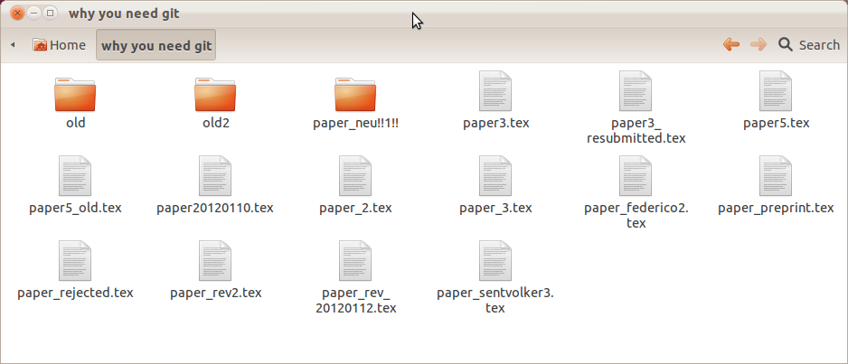
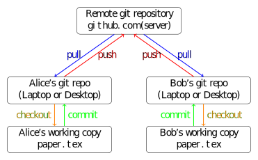

© github octocat
© github octocat
Hmm, which one is the latest version?

Does this trigger flashbacks?
No need to bounce "here's the new version" e-mail messages and combine files manually (with the risk of losing your work)
What is needed is a server that hosts the database
[user]
name = highlando
email = jnhlnd@gmail.com
[color]
ui = auto
diff = auto
status = auto
branch = auto
[alias]
ci = commit -am
[diff]
tool = gvimdiff

If you have never seen github, take a look at any repository you like, for example
1 logical change → 1 commit!
Do not try to fix all bugs in one monster commit!
Example commit messages:
Get a project from a server
| clone remote repo | git clone git@github.com:andrenarchy/krypy.git |
or create it locally and put it on the server...
| create empty repo | git init |
| link to remote repo | git remote add origin git@github.com:andrenarchy/krypy.git |
| first push | git push -u origin master |
| pull changes from remote | git pull |
| show changes in all files | git diff |
| show changes in specified files | git diff paper.tex gmres.py |
| overview of changes | git status |
| add specified files for commit | git add paper.tex gmres.py |
| commit to local repo | git commit |
| commit all changes to local repo | git commit -a |
| push commits to remote repo | git push |
| show last commit messages | git log |
| revert a file to last commited state | git checkout paper.tex |
| Shortcut: commit all and add message | git commit -am 'message' |
| HELP! show help for command CMD | git CMD --help |
| list all branches | git branch |
| create branch andre_hack | git branch andre_hack |
| create version tag release2.3 | git tag release2.3 |
[...] codes themselves are rarely published. This is the equivalent of publishing a theorem and claiming that a proof exists, but not including it in the paper.
git commit -am 'Final version for published results' git tag ... git push --tagsand make it available for easy download.
Questions?